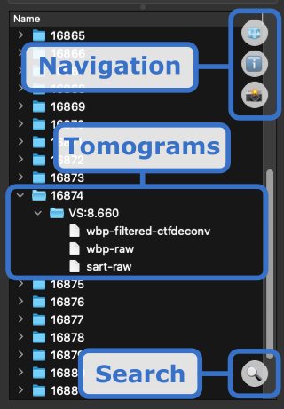
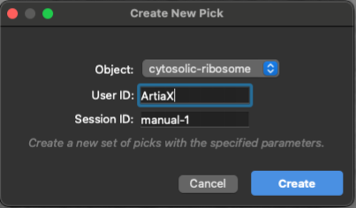

ChimeraX-Copick Plugin Tutorial
Mouse Required
We strongly recommend using a mouse for this workflow, as right-clicking is essential for placing and manipulating picks.
Installation
1. Download ChimeraX
Download and install ChimeraX from the official website
2. Install the Copick Plugin
- Open ChimeraX
- Go to Tools > More Tools... to open the toolshed
- Search for
copickin the search bar - Download and install the copick plugin by clicking on Install
Setup Remote Data Access
Optional Step
Skip this section if your data is already available on your local machine.
If your data is stored on a remote server (available via ssh), you'll need to establish an SSH tunnel:
This command creates a local port forwarding from port 2222 to the remote server's port 22, allowing secure access to remote data.
If your data is stored in an S3 bucket, ensure you have the necessary credentials configured using the AWS CLI. S3 credentials need to be set in the environment where ChimeraX is launched, or specified in the copick configuration file.
If you are using a copick configuration based on the cryoET data portal no additional setup is required. The plugin will automatically connect to the portal and retrieve available datasets.
1. Opening a Copick Project
To load a copick project into ChimeraX:
- Open ChimeraX
-
In the command line at the bottom, enter:
Example Config - Used in this tutorial.
{ "name": "CZ cryoET Data Portal Dataset", "description": "This copick project contains data from datasets (10426,).", "version": "1.18.0", "pickable_objects": [ ], "user_id": null, "session_id": null, "config_type": "cryoet_data_portal", "overlay_root": "local:///tmp/project/", "dataset_ids": [ 10426 ], "overlay_fs_args": { "auto_mkdir": true } }Results will be stored in
/tmp/project/Refer to the Examples for more information on creating config files. -
Press Enter
The plugin will launch and display the Annotation Panel on the left side of the window along with a Run Gallery showing thumbnail previews of all available tomograms.

Understanding the Main Interface
The Annotation Panel contains three main tabs (one for each annotation type). The Tomogram Panel contains a hierarchical view of the image data (Run -> VoxelSpacing -> Tomogram).
Annotation Panel

| Icon | Button | Description |
|---|---|---|
| 📄 | New | New annotation set |
| 📋 | Copy | Copy annotation set |
| ❌ | Delete | Delete annotation |
| 🔍 | Search | Search/filter annotations by name |
Tomogram Panel

| Icon | Button | Description |
|---|---|---|
| 🧊 | 3D View | Switch to 3D tomogram view |
| ℹ️ | Info | Show detailed run information |
| 📸 | Gallery | Return to gallery view |
| 🔍 | Search | Search/filter runs by name |
2. Adding an Object Type
Before you can pick particles of a specific type, you need to define Pickable Object Types in your configuration.
Opening the Edit Object Types Dialog
In the Copick Annotation Panel, click the ✏️ Edit Object Types button (pencil icon) at the top.
The Edit Object Types Dialog
The dialog has two main sections: A table showing all currently defined pickable objects and a configuration form for new objects.
Table Management Buttons
| Icon | Button | Action |
|---|---|---|
| ✏️ | Edit Selected | Modify the selected object |
| ❌ | Delete Selected | Remove the selected object |
| 📄 | Add New | Create a new object type |
Creating a New Object Type
-
Click the 📄 Add New button
-
Fill in the Object Configuration form:
| Field | Description | Example |
|---|---|---|
| Name | Unique identifier (e.g., "ribosome", "atp-synthase") | `cytosolic-ribosome |
| Is Particle | for point picks, for segmentation masks | |
| Label | Unique numeric identifier (auto-increments) | 1 |
| Color | Click the color box to choose visualization color | #155728 |
| Field | Description | Example |
|---|---|---|
| EMDB ID | Link to EMDB entry (e.g., EMD-1234) | N/A |
| PDB ID | Link to PDB structure (e.g., 1ABC) | N/A |
| Identifier | GO term or UniProt ID | GO:0022626 |
| Map Threshold | Isosurface threshold for visualization | N/A |
| Radius (Å) | Particle display radius in Angstroms | 150 |
-
Click the ✅ Save Object button to add the new object type
-
The status will show a success message
-
Click Save & Close to apply changes to your configuration

Changes Saved
Changes to object types are saved to your configuration file and persist across sessions.
3. Opening a Tomogram
- In the Run Gallery, browse available tomograms as thumbnails
- Click on any thumbnail to select that tomogram/run
- The tomogram will load into the 3D viewer
- Expand a Run in the tree view by clicking the arrow
- Expand a Voxel Spacing (e.g., "10.0")
- Double-click on a tomogram type (e.g., "wbp" or "denoised")
The 3D Visualization Interface
Once a tomogram is loaded, ChimeraX displays:
Visualization Modes
Use keyboard shortcuts to switch display modes:
| Icon | Shortcut | Mode | Description |
|---|---|---|---|
| Q+Q | Tilted Slab | Single plane view (default) | |
| E+E | Orthoplanes | XY, XZ, YZ planes simultaneously | |
| E+E | Volume Rendering | Density-based olume rendering | |
| E+E | Isosurface | Threshold and compute isosurface | |
| X+X | XY View | View from Z axis | |
| Y+Y | YZ View | View from X axis | |
| Z+Z | XZ View | View from Y axis |
Adjusting Contrast
Use the Contrast panel (right side) to adjust visualization:
- Center: Midpoint of the grayscale range
- Width: Contrast range
Invert Contrast
Press .+. (two periods) to quickly invert contrast for better particle visibility.
4. Creating a New Particle List
A Particle List (Pick Set) is a collection of particle locations for a specific object type.
Steps to Create a New Pick Set
-
Ensure you have a tomogram open
-
In the Picks tab of the Copick Annotation Panel, click the 📄 New button (document icon) in the bottom-right corner
-
The Create New Pick dialog appears:

| Field | Description | Default |
|---|---|---|
| Object | Select the particle type to pick | First in list |
| User ID | Your identifier | From config or "ArtiaX" |
| Session ID | Unique session identifier | "manual-1", "manual-2", etc. |
-
Select your desired Object from the dropdown (objects are color-coded)
-
Optionally modify the User ID and Session ID
-
Click Create
What Happens Next
After creating the pick set:
- [x] A new entry appears in the Picks table
- [x] The mouse mode automatically switches to "mark plane" for picking
- [x] You can now start placing particles!

The Picks table displays:
| Column | Description |
|---|---|
| User/Tool | Who created the picks |
| Object | Particle type (color-coded) |
| Session | Session identifier |
Info
Apart from the picks we just created for manual picking you can now also see two (read-only) sets of ribosome coordinates from the cryoET data portal! Objects are found/matched via the Gene Ontology identifier.
5. Picking Particles
Placing Particles
With a pick set selected and mouse mode set to "mark plane":
-
Navigate to the region of interest using:
- Shift + Mouse wheel to scroll through Z-planes
- F+F shortcut for "move planes" mode (need to switch back to "mark plane" after use!)
-
Right-click on the tomogram where you see a particle
-
The particle marker appears at the clicked location

Mouse Modes for Picking
| Shortcut | Mode | Description |
|---|---|---|
| A+P | Mark Plane | Add particles on current plane (default for new picks) |
| D+P | Delete Picked | Remove particle under cursor |
| S+S | Select | Select particles for batch operations |
Info
The active mouse mode is always displayed at the top of the canvas!
Navigating Between Particles
Use the Stepper Widget below the Picks table:
| Control | Action |
|---|---|
<< |
Jump to previous particle |
>> |
Jump to next particle |
| Index | Shows current particle number |
Keyboard shortcuts:
- A+A - Previous particle
- D+D - Next particle
Editing Particles
- Press S+S or select "Select" mode
- Click on a particle to select it
- Use toolbar buttons:
- Press -+- to remove the currently active particle
- Or press D+P for "delete picked" mode, then right-click on particles
- Press S+S for select mode
- Click particles to select them (or S+A to select all)
- Press D+S to delete selected particles
Controlling Particle Display
| Shortcut | Effect |
|---|---|
| W+W | Toggle particle list visibility (show/hide all) |
| 0+0 | Set 0% transparency (fully opaque) |
| 5+5 | Set 50% transparency |
| 8+8 | Set 80% transparency |
Saving Your Work
Automatic Saving
Picks are automatically saved when you:
- Switch to a different tomogram
- Close the Copick tool
- Exit ChimeraX
The picks are stored in the overlay directory specified in your copick configuration.
Quick Reference: Keyboard Shortcuts
Show All Shortcuts
Press ? to display all shortcuts in the ChimeraX log window.
Particles
| Shortcut | Action |
|---|---|
| W+W | Toggle particle display |
| A+A | Previous particle |
| D+D | Next particle |
| S+A | Select all particles |
| -+- | Remove active particle |
Picking
| Shortcut | Action |
|---|---|
| A+P | Add on plane mode |
| D+P | Delete picked mode |
| S+S | Select mode |
| D+S | Delete selected particles |
Visualization
| Shortcut | Action |
|---|---|
| Q+Q | Single plane (slab) |
| E+E | Orthoplanes |
| X+X | XY view |
| Y+Y | YZ view |
| Z+Z | XZ view |
| C+C | Toggle clipping |
| F+F | Move planes mode |
| R+R | Rotate slab mode |
| .+. | Invert contrast |
Transparency
| Shortcut | Action |
|---|---|
| 0+0 | 0% transparency (opaque) |
| 5+5 | 50% transparency |
| 8+8 | 80% transparency |
Info
| Shortcut | Action |
|---|---|
| I+L | Toggle info label |
| ? | Show all shortcuts |
Troubleshooting
Picks aren't appearing
- Ensure a pick set is selected in the Picks table
- Check that mouse mode is set to "mark plane" (A+P)
- Verify you're right-clicking, not left-clicking
Can't see particles
- Press W+W to toggle visibility
- Adjust transparency with 0+0, 5+5, or 8+8
Keyboard shortcuts not working
Run cks in the ChimeraX command line to enable Copick keyboard shortcuts:
Tomogram not loading
- Check that your config file path is correct
- Verify the data files exist at the paths specified in the config
- For remote data, ensure your SSH tunnel is active